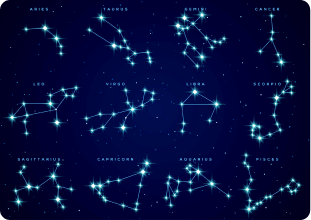

What are constellations?
There are a few different definitions of constellations, but many people think of constellations as a group of stars. The constellations you can see at night depend on your location on Earth and the time of year. Constellations were named after objects, animals, and people long ago. Astronomers today still use constellations to name stars and meteor showers.
What constellations can you see in the night sky?
The constellations you can see at night depend on the time of year. Earth orbits around the Sun once each year. Our view into space through the night sky changes as we orbit. So, the night sky looks slightly different each night because Earth is in a different spot in its orbit. The stars appear each night to move slightly west of where they were the night before. Your location on Earth also determines what stars and constellations you see, and how high they appear to rise in the sky. The Northern Hemisphere is always pointing in a different direction than the Southern Hemisphere. This means that stargazers in Australia, for example, get a slightly different view of the sky and can see a few different constellations than those in the United States. It can be a little confusing to picture how the night sky changes as we orbit the Sun. You can see how it all works in the illustration below.

Constellations by seasons
Constellations are ever-changing patterns of stars that grace our night sky, varying with the seasons. From the wintry brilliance of Orion and Taurus to the summer's Cygnus and Lyra, these celestial arrangements have inspired cultures throughout history. Join us as we explore the constellations by season, delving into their rich history and captivating lore.